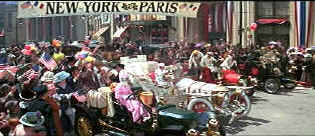

| Great Race, The/ B+, B+ |
| Warner/1965/160/ANA 2.35 |
The Great Race is inspired by the wacky
and irreverent Warner Brothers Looney Tunes as well as the silent film
comedies. The ode to Mr. Laurel and Mr. Hardy, and Mack Sennett, and
all those wonderful comedians of the silent film era is warm and genuine.
Director Blake Edwards generously and gratefully acknowledges his dept to
those pioneer filmmakers of yesteryear and without further ado proceeds to
go for broke with a silly and delicious helping of pie-in-your-face
comedy. From the opening sequences featuring some great stunts and
delightful vehicular contraptions, the whole film is indeed a joyously
executed ode to slapstick.
 |
|
And they're off! ©Warner |
It's the turn of the 19th century and
daredevil "The Great Leslie" constantly captures the public's
imagination with his death defying stunts. Leslie's pure white handsome
presence makes women swoon and men puff on cigars. Professor Fate, he of
the black heart and devious mustache turn, is ever on Leslie's trail,
trying to turn public adulation to his own great signature misdeeds. When
a road race from New York to Paris is proposed, Maggie Dubois is the
beautiful suffragette determined to provide inside news coverage of the
cross continent shenanigans.
The main theme, composed around elements from
Mancini's song The Sweetheart Tree, is thoroughly charming. The
Russell Harlan cinematography is comic-book upbeat and the production
design, from the zany automobile contraptions to the settings ranging from
Boracho to Potzdorf to Paris are draped in their most picturesque finery.
All the actors are having a ball in The Great
Race. There's such a spirit of freedom about the film. And the actors
can overact to their hearts content. Tony Curtis provides his best good
boy smile through every situation as Leslie, though if there's one glaring
fault in The Great Race, it's Jack Lemmon's unabated loud
delivery. Does he really have to scream every other line to go over the
top? Wouldn't a twist of half a mustache as Professor Fate been enough?
Natalie is a perfectly composed fruit pie as Maggie. She harks back with
glee to heroines of yesteryear. Peter Falk adds his deft and daft touch as
Fate's henchman Max, and Keenan Wynn adds good-natured support as Leslie's
man Hezekiah.
This is one movie where Blake Edwards can let it
all really hang out. The Boracho fight choreography is wild and wooly and
wonderful. Try this one one on for size. How did Professor Fate's train
miraculously turn around on the tracks? I wonder what that was about?
Perhaps The Great Race is overly ambitious is length and scope, but
section by section provides their own joys. The Mancini music bubbles
along with the delicious machines with unusual harmony. The pie
fight is a humungous exercise in whipping up fun with whipped cream. Tony
Curtis dodges pie after pie with goody-two-shoes grace as the scene builds
to pie payoff after payoff. It had me licking my lips in laughter. All I
can say is "Push the button, Max."
The Great Race film elements are in
outstanding condition. Color saturation is bright and rich providing eye
candy to show off the comic shenanigans. Excellent contrast range packs
lots of punch and pie into the picture. Beautiful black levels with
nice detail within the black. Overall nice depth of detail. Check out the
confetti in Potzdorf. Some NTSC artifacts rear up on the periphery like
some minor interaction on the clapboard siding is noticeable. I caught
some detectible small detail jitter in a few sequences. That first sight
of Natalie Wood is one wonderful red-colored lollipop. Wood looks as
scrumptious as ever in The Great Race. The remastered Dolby Digital
5:1 surround track is clean, crisp and the Mancini music airy. A
fifteen-minute behind the scenes short provides a nice tour of the
production. A short look behind the Boracho fight is the closest to
getting inside. |
|
|
|

Selections from the Feature
Archive include articles on Akira Kurosawa, Frank Darabont, Blonde Bimbos, Hollywood Street Gangs, or Vietnam: The Hollywood Pariah, and many
more....
Sturges Emerges

Preston Sturges was Hollywood's resident comic genius for more
than a decade. His movies are timeless. Click on his image to read all
about it.
 
ISF Monitor
Calibrations in the Tristate New York area. Lots of hardware
info and frequent hardware peaks from video expert Kevin Miller. They may
be judgmental, but that's the point, isn't it. Lots of DVD reviews plus
news and more.
ISF presenter and industry consultant Jim Burns provides info and HDTV
and other areas on his site.

World class video expert Joe Kane's home on the Internet. Look
for details on the new DVD Essentials.
Imaging Science Foundation
The Imaging Science Foundation promotes proper standards in
home theater viewing. ISF trained technicians offer monitor calibration
services to consumers. The difference in a properly calibrated
monitor can be astounding. Click on the image to find an ISF member near
you.
 Have you visited Home Theater Talk
lately? One of the friendliest places on the Net for Home Theater and DVD
discussion, you can get help for installation problems or simply share
your opinions with other Vidiots. Have you visited Home Theater Talk
lately? One of the friendliest places on the Net for Home Theater and DVD
discussion, you can get help for installation problems or simply share
your opinions with other Vidiots.
|